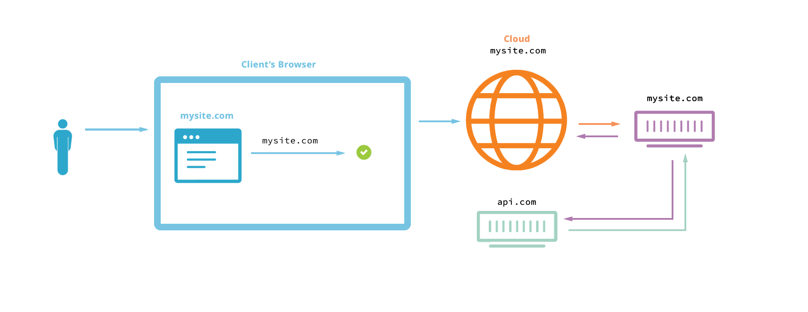
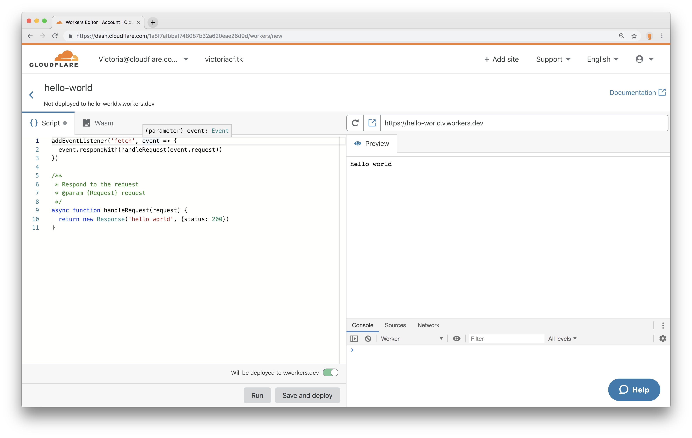
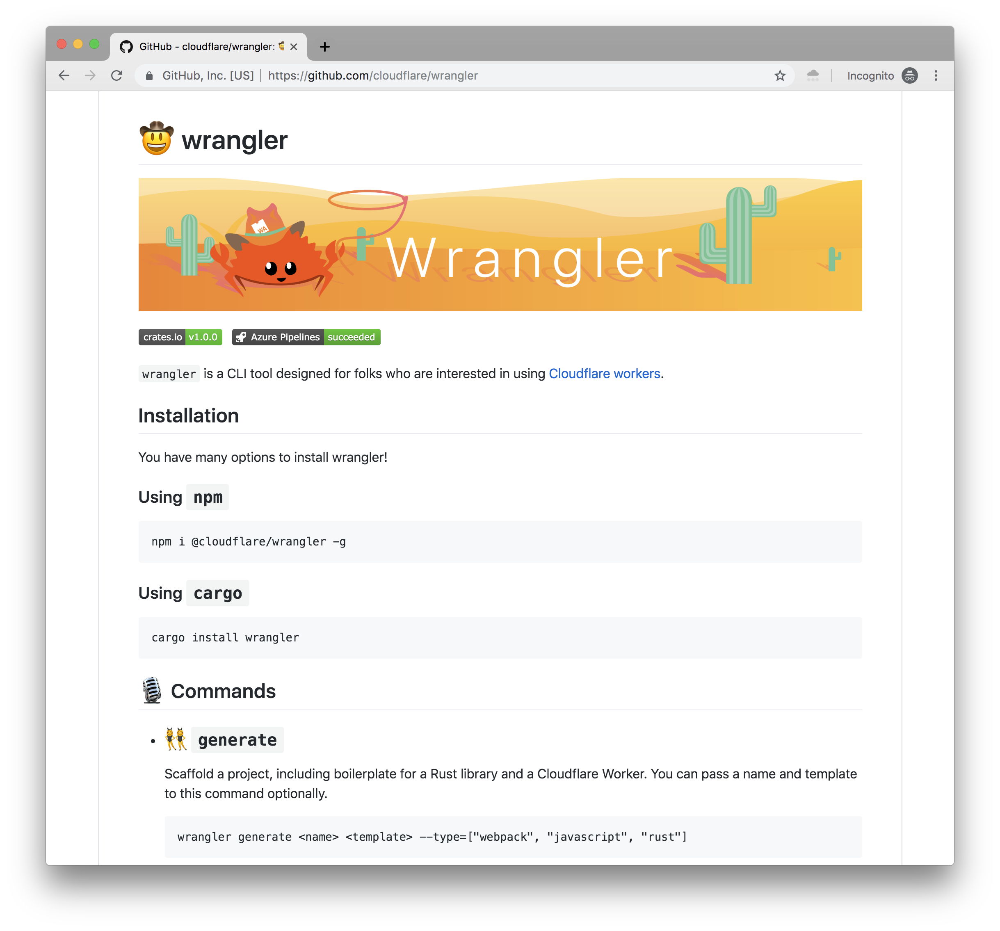

Dev life using Serverless
Victoria Bernard
June 21, 2019
Who am I?
- Engineer
- Fat baby

Tools
Serverless
/ˈsəːvələs/ nounCompute without having to think about machine resource allocation.
Clouds Compete
What makes developers happy?
Lazy
Truth

Agenda
- What it means to be useful
- Example of long-lived usefulness
- Apply to serverless
Useful
/ˈyo͞osfəl/ adj.able to be used for a practical purpose or in several ways.
Useful
/ˈyo͞osfəl/ adj.able to be used for a practical purpose or and in several ways.
QTips
Over 550 billion units worldwide
Useful
/ˈyo͞osfəl/ adj.able to be used for a practical purpose and in several ways.
Practical
-
Cheap

-
Accessible
-
Easy to use
Useful
/ˈyo͞osfəl/ adj.able to be used for a practical purpose and in several ways.
Clean ears
Medicine
Door Picking
Makeup
Developer Tool Example
Github

— Geoffrey Grosenbach, founder, PeepCode
Useful
/ˈyo͞osfəl/ adj.able to be used for a practical purpose and in several ways.
Practical
-
Free
-
Reliable
-
uses
git
Several ways
- Host code
- Comment on PRs
- Professional Networking
- Pages
- so much more...
Looking at Serverless
Serverless
/ˈsəːvələs/ nounCompute without having to think about machine resource allocation.
Useful
/ˈyo͞osfəl/ adj.able to be used for a practical purpose and in several ways.
Useful
/ˈyo͞osfəl/ adj.able to be used for a practical purpose and in several ways.
Practical
-
Anywhere
-
Anytime
-
Reasonable Price

-
Fast
Cold Starts
Practical
-
Anywhere
-
Anytime
-
Reasonable Price (...for some)
-
Fast (...for some)
Boss On Board

Hacks that make me love Serverless
Browsers... Rocky Relationship

Cors

Traditional Solutions
-
Have access to
api.com -
Make requests from your server at
mysite.com
api.com
server {
listen 80 default_server;
listen [::]:80 default_server;
listen 443;
server_name slides.*;
ssl on;
ssl_certificate /usr/local/share/ca-cert/cert.pem;
ssl_certificate_key /usr/local/share/ca-cert/private.pem;
client_max_body_size 5000M;
root /var/www/slides;
index index.html;
location /favicon.ico{
alias /var/www/victoriabernard.com/src/2016/04/Victoria_logo_gear.png;
}
location /serverless {
root /var/www/slides/workers-slides-1002;
index index.html;
if ($request_method = 'OPTIONS') {
add_header 'Access-Control-Allow-Origin' '*';
add_header 'Access-Control-Allow-Credentials' 'true';
add_header 'Access-Control-Allow-Methods' 'GET, POST, OPTIONS';
add_header 'Access-Control-Allow-Headers' 'DNT,X-Mx-ReqToken,Keep-Alive,User-Agent,X-Requested-With,If-Modified-Since,Cache-Control,Content-Type';
add_header 'Access-Control-Max-Age' 1728000;
add_header 'Content-Type' 'text/plain charset=UTF-8';
add_header 'Content-Length' 0;
return 204;
}
if ($request_method = 'POST') {
add_header 'Access-Control-Allow-Origin' '*';
add_header 'Access-Control-Allow-Credentials' 'true';
add_header 'Access-Control-Allow-Methods' 'GET, POST, OPTIONS';
add_header 'Access-Control-Allow-Headers' 'DNT,X-Mx-ReqToken,Keep-Alive,User-Agent,X-Requested-With,If-Modified-Since,Cache-Control,Content-Type';
}
if ($request_method = 'GET') {
add_header 'Access-Control-Allow-Origin' '*';
add_header 'Access-Control-Allow-Credentials' 'true';
add_header 'Access-Control-Allow-Methods' 'GET, POST, OPTIONS';
add_header 'Access-Control-Allow-Headers' 'DNT,X-Mx-ReqToken,Keep-Alive,User-Agent,X-Requested-With,If-Modified-Since,Cache-Control,Content-Type';
}
}
location /05-17-2018 {
root /var/www/slides/workers-slides-0517;
try_files $uri $uri/ /index.html;
if ($request_method = 'GET') {....
}
location /10-02-2018 {
if ($request_method = 'GET') {...
...
}
}
}Make the call on mysite.com
Serverless Solution

Serverless Solution
You want to run:
fetch('https://api.com')
fetch('https://some-other-host-aint-me.com')Instead I could call
fetch('https://mysite.com/external/api.com')
fetch(
'https://mysite.com/external/some-other-host-aint-me.com'
)Setup a path on your own domain to accept external requests
addEventListener('fetch', event => {
const { url } = event.request
if (url.includes('external'))
event.respondWith(fetchExternal(event.request))
event.respondWith(fetch(event.request))
})
function fetchExternal(request) {
const myExtralsURI = '/external/'
const strippedURI = request.url.split(
myExtralsURI
)[1]
return fetch('https://' + strippedURI, request)
}
Mock API
Traditional Solutions
- Mock dev client in your code
- Setup Node on localhost, doesn't work in CI
Mock API
Function that returns raw JSON as a Response
async function rawJsonResponse(json) {
const init = {
headers: {
'content-type': 'application/json;charset=UTF-8',
},
}
return new Response(JSON.stringify(json), init)
}
Set event listener to return raw JSON
on
/fake-json
addEventListener('fetch', event => {
const { url } = event.request
if (url.includes('fake-json'))
event.respondWith(
rawJsonResponse({
mock: 'this',
bar: 'foo',
})
)
event.respondWith(fetch(event.request))
})
Several Other hacks
- Aggregate JSON responses
- Direct requests based on region
- Maintenance page
- So much more..
Serverless
- Practical
-
Anywhere
-
Anytime
-
Reasonable Price (...for some)
-
Fast (...for some)
- Used in several, even non-professional, ways
Try it out
CLI - Wrangler
Templates

Sign Up, really it's free!
Cersei is my never ending love